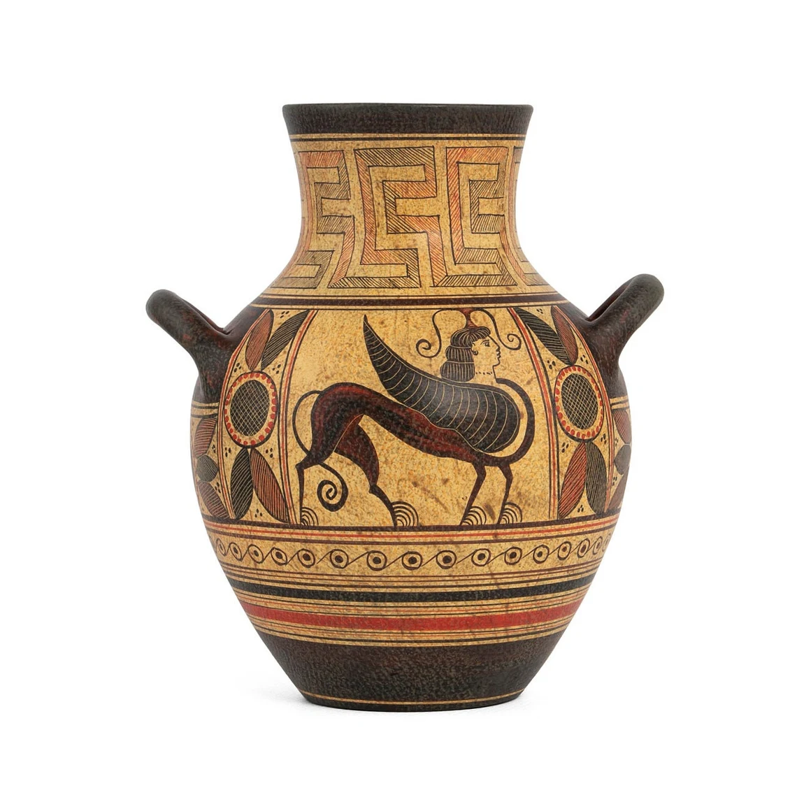
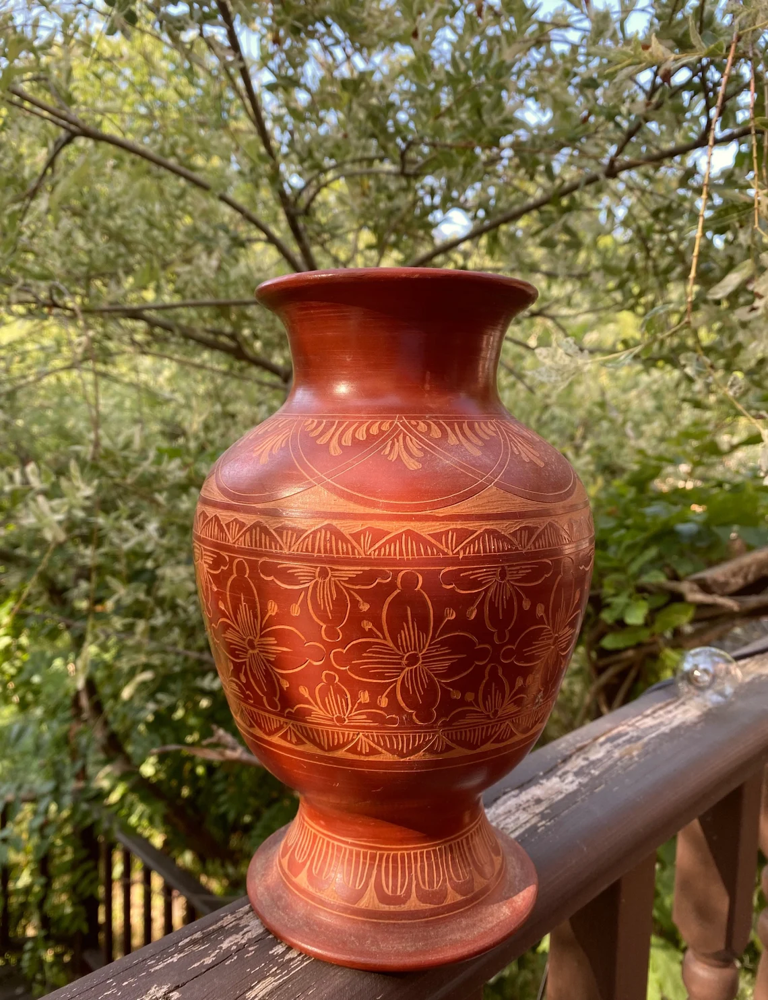

Sri Lanka boasts a diverse range of pottery crafts that showcase the country's artistic ingenuity and cultural heritage. Over the centuries, different regions of Sri Lanka have developed their unique pottery traditions. Here are some of the notable pottery crafts found in Sri Lanka:
Red and Black Pottery: This is one of the most iconic pottery styles in Sri Lanka. Potters skillfully create pottery with a distinct red and black color combination.
The red clay is polished and then fired in a specific manner to achieve the striking black finish.
Traditional Terracotta Pottery: Terracotta pottery is widely practiced in Sri Lanka and involves using natural clay fired at relatively lower temperatures. The pieces are often left unglazed, giving them an earthy and rustic appeal.
Anuradhapura Pottery: The ancient city of Anuradhapura is renowned for its historical significance and its unique pottery style. Anuradhapura pottery often features intricate designs and patterns inspired by ancient Buddhist art and architecture.
Kandyan Pottery: The central highlands of Kandy are home to the Kandyan pottery tradition.
It is known for its elegant shapes and decorative motifs influenced by the region's cultural heritage.
Hena Pottery: Hena pottery comes from the southern coastal region of Sri Lanka, and it is named after the village of Hena. The craft often involves creating pottery with animal and human figures, reflecting the region's traditional beliefs and folklore.
Matara Pottery: Matara, another coastal town in Sri Lanka, has its pottery style. The pieces are typically utilitarian, ranging from water pots to cooking utensils, showcasing a blend of form and functionality.
Village Pottery: Various villages across the country practice traditional pottery techniques. These village potters create everyday items such as cups, bowls, and pots using age-old methods passed down through generations.
Contemporary Pottery: In recent times, Sri Lanka has seen the emergence of contemporary pottery artists who blend traditional techniques with modern designs, creating unique and artistic pottery pieces that appeal to a global audience.
Pottery in Sri Lanka is not just a craft; it is an art form that reflects the nation's cultural diversity and artistic expression. The pottery techniques and styles have been handed down through generations, preserving the country's heritage and creativity. Today, pottery continues to thrive as both a traditional craft and a contemporary art form, making it a significant part of Sri Lanka's cultural identity.
Sri Lanka is home to several famous places known for their pottery products, where visitors can explore and purchase a wide range of traditional and contemporary pottery pieces. Some of the well-known locations include:
Avissawella: Avissawella, located in the Sabaragamuwa Province, is renowned for its vibrant pottery industry. The town has numerous pottery workshops and studios where skilled artisans create beautiful pottery items, including decorative pieces and utilitarian ware.
Kandy: The picturesque city of Kandy in the central highlands is not only famous for its cultural heritage but also for its pottery craft.
Kandyan pottery is well-regarded for its elegant designs and unique forms. Tourists can find pottery studios and shops offering a variety of pottery products in Kandy.
Matara: Matara, situated in the southern coastal region, is another prominent center for pottery in Sri Lanka.
The traditional pottery craft in Matara produces a range of functional and decorative pieces, often featuring intricate designs.
Anuradhapura: The ancient city of Anuradhapura, with its rich historical significance, is known for its traditional pottery as well. Tourists visiting Anuradhapura can explore pottery workshops and galleries, where artisans create pottery inspired by ancient designs.
Hambantota: Hambantota, located in the southern province, is renowned for its distinctive Hena pottery.
This craft involves creating pottery items, such as figurines and masks, reflecting the region's cultural traditions and folklore.
Colombo: As the capital city of Sri Lanka, Colombo offers a diverse range of shopping experiences, including pottery. Tourists can visit artisanal markets, craft centers, and galleries in Colombo to find both traditional and contemporary pottery products.
Dehiwala-Mount Lavinia: This suburban area near Colombo is known for its pottery workshops and stores.
Visitors can explore the local pottery scene and find unique and artistic pieces.
Galle: Galle, a historic coastal city, has a thriving pottery industry. The pottery products here often showcase a fusion of traditional techniques and modern designs, making them popular among tourists.
These are just a few examples of famous places for pottery products in Sri Lanka. Throughout the country, you can discover numerous other towns, villages, and regions where pottery is deeply rooted in the local culture, and artisans continue to create exceptional pottery pieces that reflect Sri Lanka's artistic and cultural heritage.
Low in stock, only 3 left Price:¥5,780 Local taxes included (where applicable) Sri Lankan Decorative Clay Pot.
Low in stock, only 3 left Price:¥6,950 Local taxes included (where applicable) Sri Lankan Decorative Clay Pot.
Low in stock, only 3 left Price:¥6,450 Local taxes included (where applicable) Sri Lankan Decorative Clay Pot.